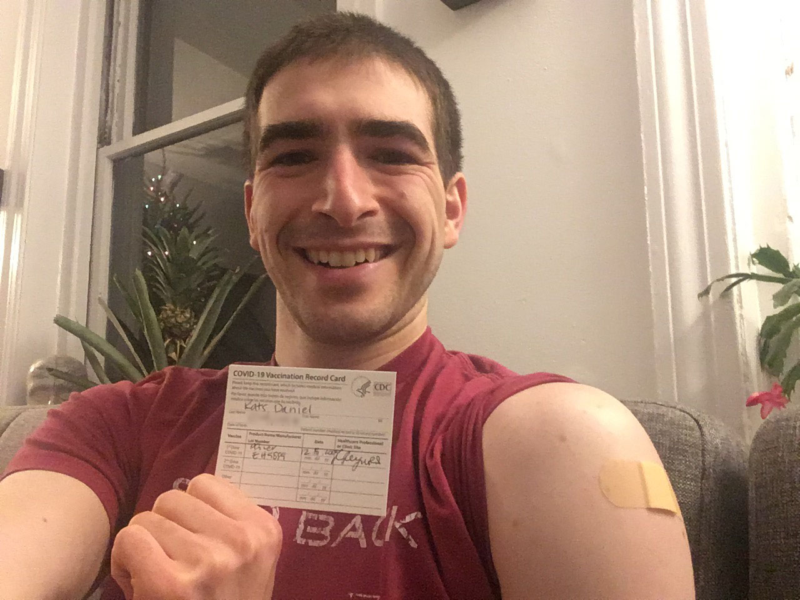
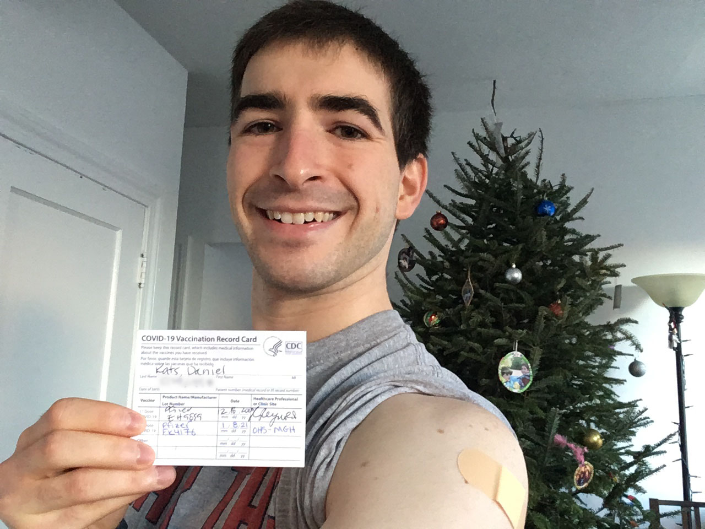
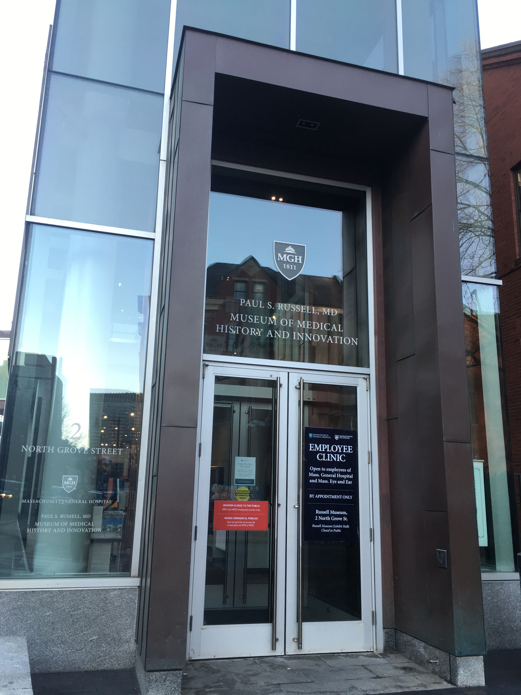

COVID-19 Vaccine
|
I received my first dose of the Pfizer/BioNTech vaccine on 12/18/2020 at 5pm. The atmosphere in the vaccine clinic was basically giddy. I was probably the nurse's 100th shot of the day, but she greeted me with, "Isn't this exciting??" Everyone was smiling, laughing, and excited for protecting ourselves against this virus. The nurse giving me the shot wasn't scheduled to get one herself, yet, because she was in a later wave. This felt a bit weird that she was doing such important work protecting others without being able to protect herself, but I'm proud to call such an honest and selfless person one of my colleagues Here's how I felt in the days after the vaccine: Day 0 (the day I got the shot): I felt absolutely nothing other than hope. No soreness, no pain, just joy. Day 1: I woke up with mild shoulder soreness, just like with any other shot. I felt totally normal otherwise. Day 2: I had some resolving mild shoulder soreness, but it was barely noticeable. And no other symptoms. Woo! Day 3: Totally back to baseline! I received my second dose of the Pfizer/BioNTech vaccine on 1/8/2021 at 8am (21 days/3 weeks after the first shot). It was a much less emotional experience than the first time…until the nurse said "You're fully vaccinated!" Here's how I felt in the days after the second dose: Day 0 (the day I got the shot): I gradually developed increasing soreness at the injection site throughout the day, but it was never more than a mild pain that was only noticeable when I pushed on the injection site or stretched my shoulder. I stayed hydrated during the day, but I did not take any acetaminophen or ibuprofen. Day 1: I woke up with worse pain around the injection site than when I went to bed, but still mild and not limiting me in any way. Other than that, feeling great! |
 |